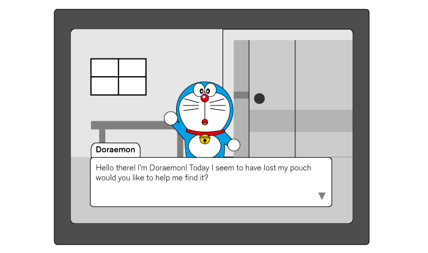
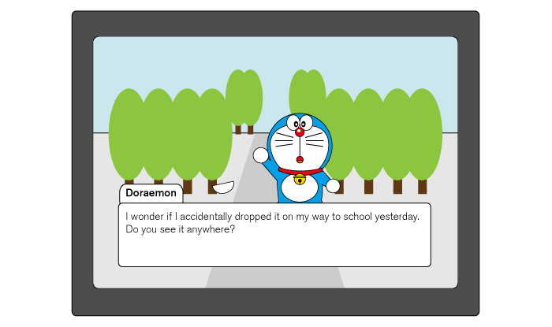

Type
School project
Role
Graphic Artist
Interaction Designer
Software

Objective
Create an interactive, multi-linear narrative.
Process
To create the story, I first wrote out the plot using a flow chart to visualize the interactions involved. Following that, characters and backgrounds were drawn in Adobe Illustrator. Furthermore, to distinguish hierarchy, the background utilizes grey, monotone shades while interactive elements are filled with bright colours and that there is a stroke on it to separate it from the background. Next, all the images are placed in Adobe Dreamweaver to enhance interactivity by making certain items clickable to drive the story forward.

Result
After this project, I have learned that in the process of making a simple story, interaction can play a large role which can stimulate and extended enhancement rather than simply reading walls of plain text. While planning the flow chart, it is crucial to know at what point the story can break into sub-categories in order to lead back to a realistic conclusion.

- 
- 